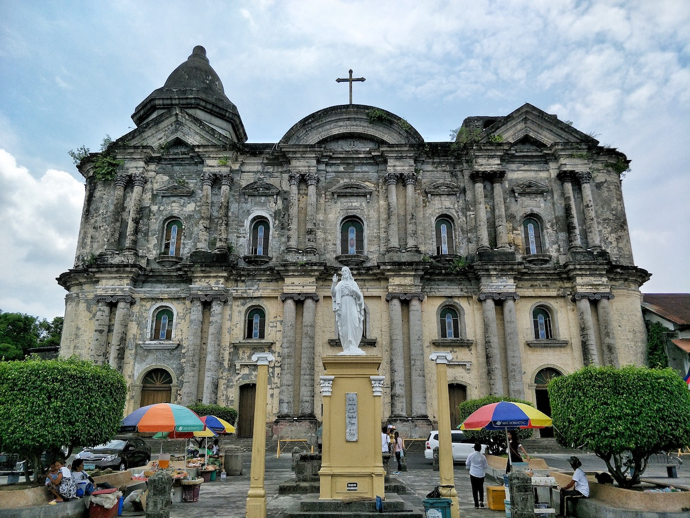
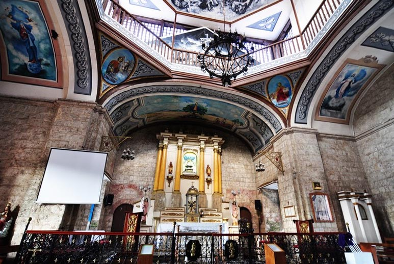
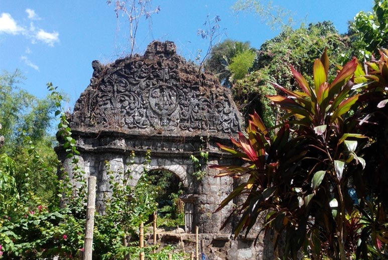
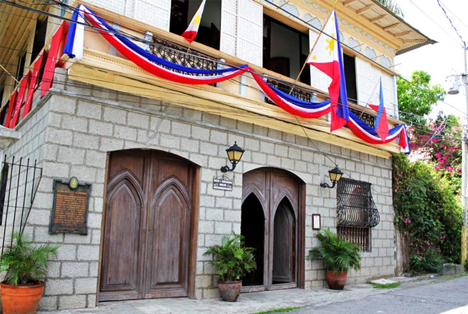
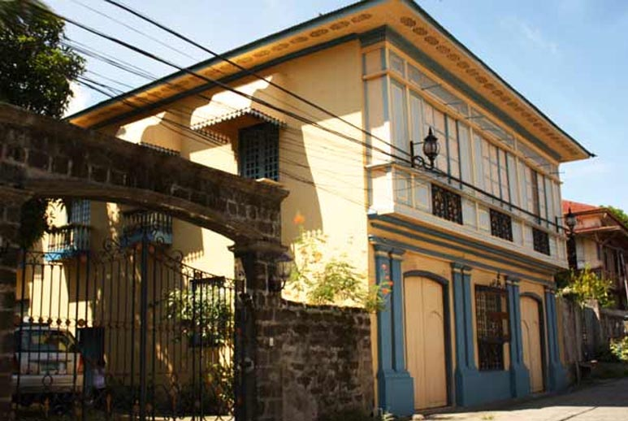
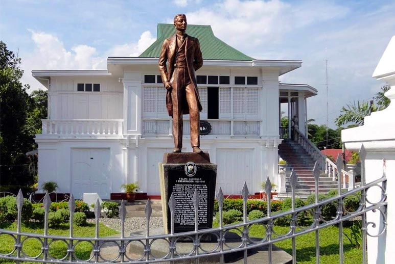
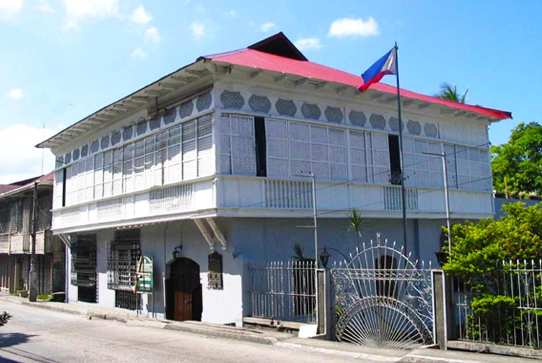
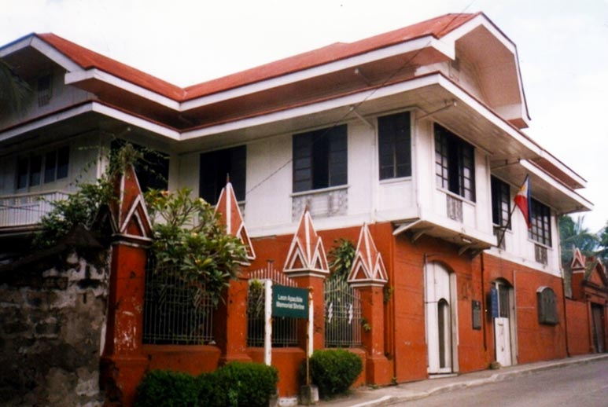
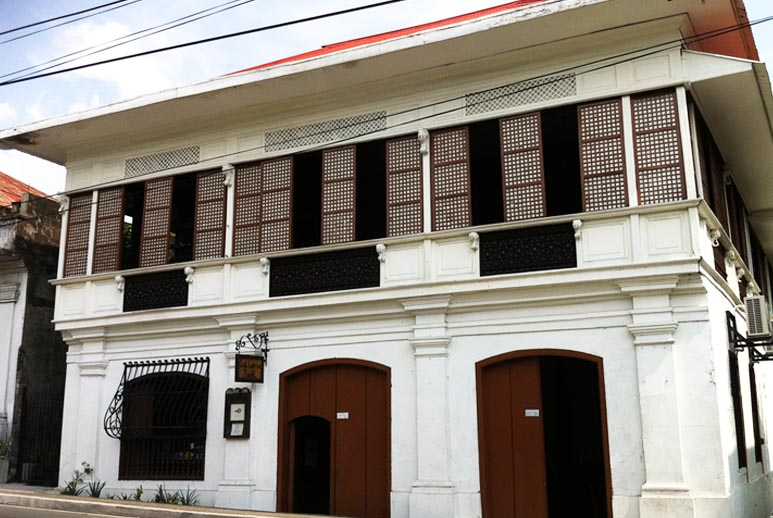

| St. Martin de Tours Basilica |
Caysasay Church / Shrine |
Well of Saint Lucia |
|  |
 |
 |
| St. Martin de Tours Basilica – This magnificent ‘larger than life’ historical monument is named after the patron saint of Taal, Saint Martin de Tours, whose fiesta is celebrated every November 11th. The Basilica’s size and Baroque façade is awe-inspiring. Its extraordinary structure is even more captivating with the addition of dome ceilings hand painted with intricate detail. |
Caysasay Church / Shrine- Recently in 2012, the Vatican issued a decree granting the Caysasay Shrine the same special privilege attached to the Roman Basilica, meaning devotees who visit and pray at the Shrine are now able to receive plenary indulgence. |
Located near the base of the San Lorenzo Ruiz Steps and a stones throw away from the Caysasay Shrine is the Well of Saint Lucia. The sacred well, whose waters always remain at same levels, is where the original image of the Lady of Caysasay was mysteriously found in 1611 after it disappeared from the church. |
| Eulalio & Gliceria Villavicencio House |
Villavicencio “Wedding Gift House” |
Don Gregorio Agoncillo |
|  |
 |
 |
| Eulalio & Gliceria Marella Villavicencio House (or “Casa V”), Calle G. Marella corner Calle H.Castillo – The imposing pre-1850’s Bahay-na-Bato have original tin ceilings and canvass wall paper with Art Nouveau designs. This historical home is more priceless because of the roles its owners played in the Spanish revolution. . |
Villavicencio “Wedding Gift House” – Adjacent to Casa V, colorful and airy interiors characterize this restored home which Eulalio gifted his wife Gliceria with on their wedding day. |
Don Gregorio Agoncillo “White House,” Batangas Provincila Road – The stately American colonial “white house” contains a collection of beautiful hardwood antique furniture pieces and priceless personal artefacts. This house is lovingly preserved by the Don Gregorio Agoncillo Foundation in honor of Gregorio’s daughter, Corazon Agoncillo. |
| Marcela Agoncillo Museum |
Don Leon Apacible Museum |
Galleria Taal |
|  |
 |
 |
| Marcela Agoncillo Museum, Calle Marcela M. Agoncillo – The home of Marcela Mariño Agoncillo, creator of the first Philippine Flag. |
Don Leon Apacible Museum, Calle Marcella M. Agoncillo – This museum showcases the elegant Art Deco style furniture and fixtures from the family’s collection. It is presently administered by the National Historical Institute. |
Galleria Taal/ Ylagan-Barrion House(Camera Museum), Calle Marcella M. Agoncillo – Established as a photo gallery since 2009 displaying the first collection of Ginoong & Binibining Taal contestants posing in formal Filipiñana costumes, it now houses the impressive camera collection of Mr. Manny Barrion Inumerable dating back to the late 1800’s. |
 Taal Heritage Town
Taal Heritage Town